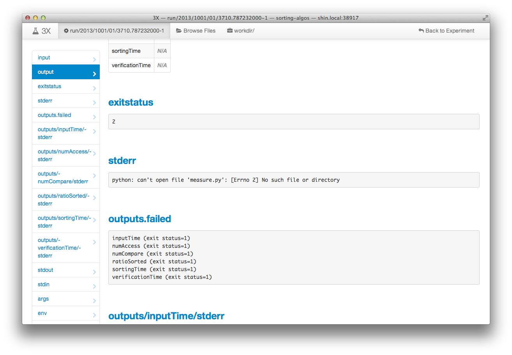
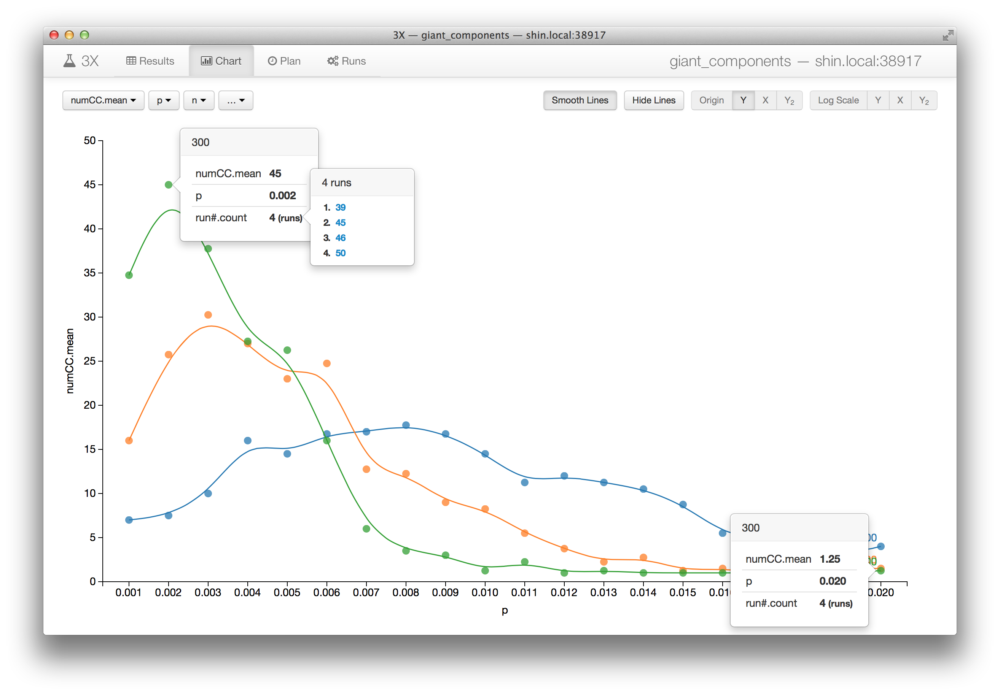
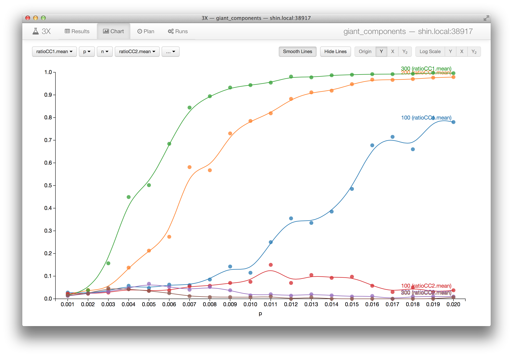

3X Tutorial with Examples
In this document, we explain how you can setup and conduct computational experiments with 3X using two examples. This step-by-step guide will introduce important features of 3X and teach you how to use them with detailed instructions.
Example 1: Studying Sorting Algorithms

Anyone who received computer science education or studied basic algorithms would be familiar with different algorithms for sorting an array of data values. In the algorithms textbook, we learn how to analyze time and space complexities of such algorithms in terms of their asymptotic behavior. Theoretical analyses of worst or best cases can be covered clearly in text, but average cases require empirical studies experimenting with actual implementations.
Suppose we want to see such an empirical result ourselves of how different sorting algorithms, namely, bubble sort, selection sort, insertion sort, quick sort, and merge sort behave on several sizes and types of inputs, e.g., when the input is already ordered, reversed, or randomly shuffled. Implementing these algorithms correctly is obviously important, but what's equally important to obtain a credible result is running different combinations of inputs and recording every detail in a systematic manner. Using 3X, we can easily obtain robust, repeatable experimental results with minimal effort. Therefore more of our time and energy can be devoted to exploring the parameter space as well as writing the program correctly, which leads our experiments to yield more interesting results and less errors.
1. Write the Program
First of all, we need to write a program that implements the sorting algorithms we want to test. Some people may prefer using a serious programming language, such as C, C++, or Java to write an efficient implementation. Others may use simpler scripting languages, such as Python, Ruby or Perl for a quick evaluation. But in the end, there will always be an executable file, or a command and a list of arguments to start our program regardless of the programming language of choice. This is the only thing 3X needs to know about the program for our experiment, and we will see where this information should be placed after we create an experiment repository in the following step.
To keep this tutorial simple, let's assume we already wrote Python code for experimenting with sorting algorithms as following two files:
sort.pycontaining each sorting algorithm as a separate Python function.measure.pycontaining code that measures how long a chosen sorting algorithm takes to finish for a generated input.
To obtain a single measurement with this program, we would a run command such as:
python measure.py quickSort 10 randomwhich outputs, for instance:
ratio sorted: 1.0
sorting time (s): 0.009179
verification time (s): 0.000225
input generation time (s): 0.000580
number of compares: 11440
number of accesses: 307352. Create and Setup an Experiment Repository
In order to keep everything related to our experiment well organized, we need to tell 3X to create a new experiment repository for us. Every detail from the definition of input/output and program to the individual records of past executions and plans for future runs will be stored and managed inside this repository. It is a typical directory (or folder) on the filesystem with a special internal structure.
3X provides two different ways to setup a new experiment repository: a quick
one-liner setup, or a slightly more lengthy step-by-step way. The quick setup
will be useful for creating entirely new experiments from scratch, while the
step-by-step setup can be useful for adjusting your existing experiment
definitions. You can either follow the first "Quick Setup" section and skip
the rest, or follow the individual steps introduced in the sections that
follows "Quick Setup". In either ways, let's say we want our repository to be
called sorting-algos.
Quick Setup
The single command shown below will create and setup a new repository for our experiment on sorting algorithms. It is simply an abbreviation for the multiple steps necessary to initialize the experiment repository and define its input and output.
# create and setup a new experiment repository
3x setup sorting-algos \
--program \
'python measure.py $algo $inputSize $inputType' \
--inputs \
inputSize=10,11,12,13,14,15,16,17,18 \
inputType=random,ordered,reversed \
algo=bubbleSort,selectionSort,insertionSort,quickSort,mergeSort \
--outputs \
--extract 'sorting time \(s\): {{sortingTime(s) =~ .+}}' \
--extract 'number of compares: {{numCompare =~ .+}}' \
--extract 'number of accesses: {{numAccess =~ .+}}' \
--extract 'ratio sorted: {{ratioSorted =~ .+}}' \
--extract 'input generation time \(s\): {{inputTime(s) =~ .+}}' \
--extract 'verification time \(s\): {{verificationTime(s) =~ .+}}' \
#Note that since this quick setup command creates only the skeleton part of our
experiment repository, we still need to place additional files at the right
place, namely, the .py files of our program. Refer to the instructions for
plugging the program in to 3X (§2.3) to prepare the program/
directory. You can safely ignore the rest of the steps, since they were
already taken care by the 3x setup command above. We'll all set to start
running our experiment.
2.1. Create an Experiment Repository
The following command creates an empty repository:
3x init sorting-algosWe can now move into the repository to further define our experiment.
cd sorting-algos2.2. Define Inputs & Outputs
Next, we shall tell 3X what are the input parameters to our experimental program, and the output values of interest.
Suppose we want to vary the input size, the initial order of input for different sorting algorithms. We can tell 3X that we have three input parameters for our experiment in the following steps.
Input 1. algo for choosing the sorting algorithm to test
The particular sorting algorithms we are interested in are the following
five, which are already implemented in sort.py. We will use the name
of the algorithms as the value for this input parameter.
bubbleSortfor Bubble SortselectionSortfor Selection SortinsertionSortfor Insertion SortquickSortfor Quick Sort (in-place version)mergeSortfor Merge Sort (bottom-up implementation)
The following command tells 3X to add this parameter to the experiment definition:
3x define input algo bubbleSort selectionSort insertionSort quickSort mergeSort Input 2. inputSize for choosing the size of the array to sort
We want to test sorting algorithms on arrays of numbers with different sizes. We will start with arrays of 1,024 (210) unique numbers, and double the size of the arrays up to size 262,144 (218). Let's omit the base and use the powers of two as the value for this input parameter:
10for 210,11for 211,- ...,
18for 218.
We should run the following command to add this parameter:
3x define input inputSize 10 11 12 13 14 15 16 17 18Input 3. inputType for choosing the type of the arrays to sort
We also want to see how each sorting algorithm behaves differently for different types of arrays as well as their sizes. We will use the following three values of this input parameter to indicate which type of input we want to use:
orderedthat is already sorted,reversedthat is sorted but in the reversed direction,randomthat is shuffled randomly.
The following command will add this last parameter:
3x define input inputType ordered reversed randomNext, suppose we want to measure the wall clock time as well as the number of compares and array accesses to finish each sorting algorithm. We can tell 3X to look for lines that match specific patterns in the output of our program to extract the values of interest. These patterns can be specified in Perl regular expressions syntax. The following steps will show how exactly we can tell 3X to extract the values of interest in the case of this experiment with sorting algorithms.
Output 1. sortingTime
The wall clock time it takes for sorting the input array is what we are
mostly interested in this experiment. We measure this time in our program
in seconds and print that out in a line that begins with sorting time (s):. Therefore 3X can easily extract the value that follows if we define the
output variable as shown in the following command:
3x define output 'inputTime(s)' extract 'sorting time \(s\): ' '.+' ''Here, there are four arguments to the 3x define output command:
- name of the output variable:
inputTime(s) - regular expression for the text that comes before the value:
sorting time \(s\): - regular expression the value matches:
.+(any non-empty string) - regular expression for the text that comes after the value: (empty string)
Note that we can append the unit of the output variable to its name
(first argument), which is (s) or seconds in this case. We can use any
text for the unit as long as it's surrounded by parentheses.
Output 2. numCompare
Similarly, we can teach 3X to extract the number of compares for the value of an output variable using the following command:
3x define output 'numCompare' extract 'number of compares: ' '.+' ''Output 3. numAccess
As well as the number of accesses to the input array of numbers with:
3x define output 'numAccess' extract 'number of accesses: ' '.+' ''Output 4. ratioSorted
To ensure correctness, note that we compute the ratio of the numbers in the array that are correctly ordered to the array size, after finishing the sorting algorithm. This is a simple measure to easily check whether the sorting algorithm was implemented correctly. When this value comes out less than 1.0, it means the the algorithm is incorrect. The following command adds this output variable to the experiment definition.
3x define output 'ratioSorted' extract 'ratio sorted: ' '.+' ''Output 5. inputTime
We also record the wall clock time that took for generating the input array to sort.
3x define output 'inputTime(s)' extract 'input generation time \(s\): ' '.+' ''Output 6. verificationTime
And the wall clock time that took for checking whether the output array is correctly sorted.
3x define output 'verificationTime(s)' extract 'verification time \(s\): ' '.+' ''2.3. Plug in the Program
The only thing 3X needs to know about our program in order to run experiments
on behalf of us is the exact command we type into our terminal to start them
ourselves. 3X assumes this information is kept as an executable file named
run under the program/ directory of the experiment repository. For
each execution of run, 3X sets up the environment correctly, so that the
value chosen for each input variable we defined earlier can be accessed via the
environment variable with the same name. 3X will also make sure any additional
files that are placed next to the run executable will also be available in
the current working directory while execution.
First, let's move into the program/ directory of our repository:
cd programAs we have two Python files necessary for implementing and measuring the
sorting algorithms, we will put both of these files under program/. If you
don't have these files readily available, let's download them directly from
GitHub with the following commands:
# copy our example Python program into the repository
exampleURL="https://raw.github.com/netj/3x/master/docs/examples/sorting-algos"
curl -LO $exampleURL/program/measure.py
curl -LO $exampleURL/program/sort.py(You can probably use wget instead of curl -LO if your system doesn't have
curl installed.)
Next, we need to create a run script that starts our Python program as
follows:
cat >run <<EOF
#!/bin/sh
python measure.py $algo $inputSize $inputType
EOF
chmod +x runNow, we're all set to start running our experiment.
3. Run Experiments
3X provides two ways to execute your experiments: You can use its graphical user interface (GUI), or the command-line interface (CLI). The GUI is easy and intuitive to use, but you might want to have more sophisticated control over your execution, or control 3X from other systems and further automate parts of your experiment using the CLI. However, it is perfectly fine for you to use both GUI and CLI at the same time, and any changes you make on one-side will be reflected to the other.
3.1. Start GUI
To start the GUI, run the following command within the experiment repository:
3x guiWhen successfully started, it will output a URL you can open in your web browser to access the GUI. On a Mac, or a GNU/Linux system running a proper GUI system, 3X will launch the browser for you.

As shown in the above screenshot, the GUI has four tabs: Results, Charts, Plan, and Runs. The first two tabs are for exploring the results of execution collected so far, while the last two are for controlling the execution.
3.2. Plan Runs
From the results table, we can click on a row which needs to be filled or more execution should be done, and plan new runs for execution. You can repeat this process from the results table to add necessary runs to fill the output columns colored red. Note that the button on each input column header can be used to expand and collapse the rows, so that you can add only part of the runs or a larger group of runs at a time.

Plan Runs from Command Line
From the command line, within the experiment repository, the following command will achieve the same result as we did in the GUI:
3x plan algo=quickSortDifferent sets of runs can be easily planned with commands similar to the following:
3x plan algo=bubbleSort,insertionSort inputSize=10,11,123.3. Start Runs
The Runs tab shows a list of queues defined in the repository and the target execution environment associated to them on the left-hand side. On the right-hand side table, all the runs added to the currently selected queue are shown with their states and value bindings for input variables in the order they will be executed.

The buttons on the queue from the left-hand side list will let you to start and stop the execution of the runs in it. Pressing the play button on the main queue starts the execution.
Start Runs from Command Line
From the command line, you can run the following command to view what runs are in the current queue:
3x statusIt will output the table of runs in the current queue that resembles the GUI as follows:
PLANNED algo=quickSort inputSize=10 inputType=ordered #1
PLANNED algo=quickSort inputSize=10 inputType=random #2
PLANNED algo=quickSort inputSize=10 inputType=reversed #3
PLANNED algo=quickSort inputSize=11 inputType=ordered #4
[...]
PLANNED algo=quickSort inputSize=18 inputType=random #26
PLANNED algo=quickSort inputSize=18 inputType=reversed #27To start execution, run:
3x start3.4. Stop Runs
To stop the execution, press the pause or stop button on the main queue.
Stop Runs from Command Line
To stop execution from the command line, either interrupt the 3x start
process with Ctrl-C, or run the following command:
3x stop3.5. Monitor Progress
As execution progresses, the state of runs will change from PLANNED to
RUNNING, then to either DONE or FAILED after finishing.

Monitor Progress from Command Line
From the command line, you can use the same command to view the state of runs in the current queue:
3x statusIt will output the table of runs with updated states:
DONE algo=quickSort inputSize=10 inputType=ordered #1 local run/2013/1001/01/1836.424138000-1
DONE algo=quickSort inputSize=10 inputType=random #2 local run/2013/1001/01/1839.494897000-2
DONE algo=quickSort inputSize=10 inputType=reversed #3 local run/2013/1001/01/1841.888092000-3
DONE algo=quickSort inputSize=11 inputType=ordered #4 local run/2013/1001/01/1844.200499000-4
DONE algo=quickSort inputSize=11 inputType=random #5 local run/2013/1001/01/1846.514245000-5
[...]
PLANNED algo=quickSort inputSize=18 inputType=random #26
PLANNED algo=quickSort inputSize=18 inputType=reversed #273.6. Trace Failures
If your program does not finish with clean (zero) exit status, or any error
occurs, their states become FAILED. For example, if you forget to plug the
.py files into the program/ directory, all runs fail as shown in the
following screenshot. Additionally, if you stop the execution, runs can be
marked as ABORTED.

By following the link of a run in the state column (FAILED, DONE, or
ABORTED) of the execution history table, it is possible to access the full
record of the execution.

4. Explore Results
3X provides two main ways with its GUI to visualize and browse the result of your experiment: with tables and charts. Although limited in its capability for exploration, 3X's CLI exposes many details of the result in tab-separated textual form, which can be more useful for processing data with other well-known command-line utilities.
4.1. Tabulate Results
The Results tab in 3X's GUI shows the desired part of the result in a tabular form with controls for filtering, aggregating, and projecting the input and output variables to the table.
Filter results by selecting the values for input variables
You can select which part of the results you want to view by choosing the values for the input variables individually. The default when no value is chosen for a input variable is to show all results of runs regardless of which value was used for execution. You can also specify what aggregate values of the output variables you want to
see as well as simple conditions on values of them, such as equality (
You can also specify what aggregate values of the output variables you want to
see as well as simple conditions on values of them, such as equality (=1) or
inequality (<=12.345) to a literal value.
 Note that it's possible to hide an unwanted variable from appearing in the
results by checking off its checkbox .
Note that it's possible to hide an unwanted variable from appearing in the
results by checking off its checkbox .
Aggregate results by some input variables
You can easily control by which input variables the results are grouped using the buttons with folder icon labels on the table header. When you make a column expanded (indicated by the open folder icon ), individual values of that variable will each have its own row in the results table. All runs that were executed using the particular value for a row will be grouped and the aggregate values of their outputs will be shown in other columns.

Sort results by columns and reorder columns
Clicking on one of the column name in the table header will sort the results table by that column in ascending order. Clicking again will reverse the order to descending, and clicking once again will deactivate sorting for the column. By holding the Shift Key ⇧ down while clicking on another column header, you can specify additional columns for sorting and give order to the results that were ranked equally with previously chosen columns. Dragging a column header to left or right direction will allow you to reorder the columns to shape the table for easier examination.
4.2. Chart Results
The Chart tab in 3X's GUI visualizes as a chart the data shown as a table in the Results tab.

You can use the controls with pull down menus on the top-left corner of the Chart tab to associate each column to either X- or Y-axis, or let the column divide the data into different series. The first variable selected is used as the Y-axis, and the second one as the X-axis. When more nominal variables are selected, data that share common values of them will be drawn in the same series in the chart. When another numerical variable is further selected, it may create a second Y-axis or share the first one depending on whether the selected variables can share the unit for the Y-axes.
4.3. Detail On-demand
Both chart and table shown in 3X's GUI are interactive: you can drill down to details on-demand.
Clicking on any of the data points plotted in the chart shows a popover menu
displaying details of the subset of data that contributed to that point. The
first row in the popover shows the Y-axis value, and the rest of the rows show
the X-axis value and other variables' values for the series. If you click on
the number of runs (shown in the last row labeled run#.count), then you can
browse the individual values before aggregation, and follow the link on each
value to inspect the full record of the run that generated it.

It's also possible to inspect individual values from the table. By holding Shift Key ⇧ down while hovering over a cell that contains an aggregated value, you can inspect each value that contributed to the aggregate and access the full record of the run that generated the individual value as well.

4.4. Tabulate from command-line
Now, let's briefly take a look at the ways using the command-line interface to obtain raw results data. In fact, some of the commands shown here are exactly identical to how the GUI accesses the data behind the scenes.
The following command will print full results of all executions containing the value for each input and output variable prefixed with its name in a tab-separated format and its run identifier on the first column.
3x results run/Part of whose output can look like:
[...]
run/2013/0924/18/1752.165321000-13 inputTime=0 numAccess=3069 numCompare=1023 ratioSorted=1 sortingTime=0 algo=insertionSort inputSize=10 inputType=ordered
run/2013/0924/18/1752.165321000-12 inputTime=0 numAccess=134201344 numCompare=33550336 ratioSorted=1 sortingTime=22.31 algo=bubbleSort inputSize=13 inputType=reversed
run/2013/0924/18/1752.165321000-15 inputTime=0 numAccess=1049598 numCompare=523776 ratioSorted=1 sortingTime=0.18 algo=insertionSort inputSize=10 inputType=reversed
run/2013/0924/18/1752.165321000-14 inputTime=0 numAccess=538588 numCompare=268780 ratioSorted=1 sortingTime=0.08 algo=insertionSort inputSize=10 inputType=random
run/2013/0924/18/1752.165321000-11 inputTime=0 numAccess=100600444 numCompare=33545965 ratioSorted=1 sortingTime=14.01 algo=bubbleSort inputSize=13 inputType=random
[...]
run/2013/0930/23/5102.639230000-2064 inputTime=0 numAccess=34360262655 numCompare=34359607296 ratioSorted=1 sortingTime=7047.79 algo=selectionSort inputSize=18 inputType=reversed
run/2013/0930/23/5102.639230000-2059 inputTime=0.01 numAccess=34359869439 numCompare=34359607296 ratioSorted=1 sortingTime=7168.51 algo=selectionSort inputSize=18 inputType=ordered
run/2013/0930/23/5102.639230000-2060 inputTime=0.18 numAccess=34360655832 numCompare=34359607296 ratioSorted=1 sortingTime=8329.18 algo=selectionSort inputSize=18 inputType=random
run/2013/0930/23/5102.639230000-2058 inputTime=0.01 numAccess=34360262655 numCompare=34359607296 ratioSorted=1 sortingTime=8850.64 algo=selectionSort inputSize=18 inputType=reversedYou can narrow down the output if you specify filters on some variables, e.g.:
3x results algo=quickSort,mergeSort inputType'!='random numCompare'>'5900000Then it outputs only the results that match given criteria:
run/2013/0926/06/1826.875115000-888 inputTime=0.01 numAccess=7134799 numCompare=5911655 ratioSorted=1 sortingTime=2.87 algo=quickSort inputSize=18 inputType=ordered
run/2013/0926/06/2351.112734000-1070 inputTime=0.01 numAccess=12805001 numCompare=5928316 ratioSorted=1 sortingTime=3.29 algo=quickSort inputSize=18 inputType=reversed
run/2013/0928/10/3748.111174000-1356 inputTime=0.01 numAccess=7168519 numCompare=5944051 ratioSorted=1 sortingTime=2.97 algo=quickSort inputSize=18 inputType=ordered
run/2013/0929/11/1246.771209000-1756 inputTime=0.02 numAccess=7345424 numCompare=6123288 ratioSorted=1 sortingTime=3.19 algo=quickSort inputSize=18 inputType=ordered
run/2013/0929/11/2047.444739000-1818 inputTime=0.01 numAccess=12120436 numCompare=5913122 ratioSorted=1 sortingTime=3.14 algo=quickSort inputSize=18 inputType=reversedExample 2: Simulating Network Formations
Having a nice way to play with a few scalar values produced by your experiment may sound good enough. However, you are very likely to encounter a situation where higher-dimensional output data, such as a time series result or a custom visualization must be handled as well. In this example, we will see how 3X supports these requirements.
Suppose we have an experiment that studies the rise of a giant connected component by gradually increasing the probability for creating edges between vertices while generating random graphs. We will borrow code from an example displayed on the gallery page of NetworkX, which is a popular Python Library for handling Graph Data.
1. Write the Program
To be used most effectively with 3X, we make several changes to the code borrowed from NetworkX:
- Save the result as an image file, named
giant_component.png, instead of showing it interactively in the GUI. - Obtain the originally hard-coded
pandnvalues from corresponding environment variables instead. - Put a single generated graph in each result for a given
pandninstead of iterating over severalpvalues. - Keep a full record of the generated random graph.
Here is our code for this experiment: giant_component.py.
When this Python script is run with n and p defined, it produces an image
file giant_component.png that will look like:

and a graph.pickle file in addition to standard output lines:
Generated binomial graph (n=200, p=0.0100):
0 [17, 60]
1 [130]
2 [129, 123, 116, 111]
3 [122, 60, 125]
[...]
198 [128, 49, 155, 52]
199 [149, 62]
Created graph.pickle
Created giant_component.png2. Setup an Experiment Repository
We will use the following quick setup command to create a repository for this
experiment. On the last line for --outputs, --file tells 3X that the
output variable graph is a file named giant_component.png with a MIME type
image/png. 3X GUI can treat output image files specially based on this
MIME-type user provides.
3x setup giant_components \
--program 'python ./giant_component.py' \
--inputs n=100,200,300 \
p=0.0{01..10} \
--outputs --file graph:image/png=giant_component.png \
#Let's make sure to put the Python code at the correct place.
cd giant_components/program/
curl -LO https://netj.github.io/3x/docs/examples/giant_components/program/giant_component.py
cd -3. Run Experiments Many Times
We can move into the repository and execute full combinations of inputs by running following commands:
cd giant_components/
3x plan n p
3x startHere, 3x plan will open your text editor to let you reorder or duplicate some
of the runs. You can simply save the presented file to confirm the runs and
add them to the queue. Once you do a 3x start, 3X will execute all the
previously planned runs in curent queue and stay executing future ones until
stopped by 3x stop. Therefore, we can now simply throw more runs into the
queue to get results from them.
Since each run of this experiment is non-deterministic, we need to execute each
input many times. This can be done by running 3x plan multiple times as
follows:
3x plan n p
3x plan n p
3x plan n p
[...]Alternatively, you can duplicate the desired lines as many as you want using
your text editor without running the 3x plan command multiple times.
4. Explore Results
3X GUI is essential for browsing the results since our only output variable is of image type.
3x guiAggregate image with Overlay
The graph column in the results table displays the PNG image files generated
by our experiment runs as in the following screenshot:

Notice here that 3X superimposes multiple images that fall into the same row, i.e., renders images on top of each other, so that any patterns or variations among them are easily discernible. This feature is provided as a specialized aggregate function, we call overlay, for image file type output variables. Overlay aggregate function can be very useful when there isn't a good scalar metric that summarizes the result or such metric is yet to be determined, and the only way to judge is for humans to look at the images that visualizes the higher-dimensional data.
Details on-demand
Individual images can be browsed one at a time using the same details on-demand technique, hovering over the aggregate image or another aggregate column while holding the Shift Key ⇧ down.

When you follow the link, the full record of the run is available as shown in the following screenshot:

The run overview page shows the image for graph in full resolution as well as
the full standard output that records the exact details of the generated random
graph. Any other files used for the run, such as graph.pickle, can be
accessed through the "workdir/" tab at the
top of the page.
5. Analyze Results Further
Suppose you want to compute some statistics from the generated graphs after you have seen a number of them. For example, the number of components and how large each of them may seem to be an interesting metric now. Additionally, you may be also interested in how long each run took to generate the graph and image.
3X allows you to define output variables incrementally, i.e., new output variables can be added later. You can either use 3X's default options to extract output values, or write a custom program that computes them. 3X's default options are either extracting the first string that matches a triple of regular expressions, or finding a generated file by name. Here, we show all three options.
Extract Execution Time from Built-in Records
As default, 3X records basic profile information for every run of your
experiment, such as execution time and maximum memory size using the GNU
time utility in the file rusage. You simply need to define an output
variable with correct regular expressions to extract those values from the
record. For example, you can extract the elapsed wall clock time of your runs
as wallTime by running the following command:
3x define output 'wallTime(s)' extract \
'Elapsed \(wall clock\) time \(seconds\): ' '[0-9.]+' '' \
rusage3X will not only extract values for wallTime from future runs but also rescan
records of past runs.
Compute Statistics
If a more complex computation is necessary to collect the values of interest,
then plugging in a custom output extractor code to 3X is your option. In
fact, the two built-in options provided by 3x define output command, namely
extract and file are mere shorthands for generating standard output
extractors. More details on output extractors are described in the next
section.
For this experiment, let's say we want to see several statistics computed from
the generated graph, including the number of components that have more than one
vertex and the size of each component. Since we dumped the graph to
graph.pickle, we can load this file and easily compute the necessary values.
compute-stats.py is one such script that prints output similar to:
Number of Components (non-singleton): 7
Number of Disconnected Nodes (singleton components): 29
Component Sizes: 153 4 4 3 3 2 2
Component Size Ratios: 0.765000 0.020000 0.020000 0.015000 0.015000 0.010000 0.010000We put this script directly under output/ of the repository so it can be
assembled into the outputs/ directory of each run and easily shared across
different output variables.
cd output/
curl -LO https://netj.github.io/3x/docs/examples/giant_components/output/compute-stats.py
cd -Next, we define an output variable, named numCC, by running the following
command:
3x define output 'numCC' extract \
'Number of Components.*:\s*' '\d+' '' \
--running 'python outputs/compute-stats.py' \
--caching compute-stats.txtThe command above does the following:
It tells 3X to extract value for the variable
numCC- using the regular expression triple
Number of Components.*:\s*,\d+, - scanning the output of the
compute-stats.pyscript, which is indicated by the command given after the argument--running.
- using the regular expression triple
The output of the command will be cached at
outputs/.shared/compute-stats.txt, so that other variables can be extracted without running it again.
We need to tell 3X to adjust other parts of the repository influenced by the new output variable by running the following command:
3x define syncIn this case, it will rescan records of past runs to extract values for the new
output variable numCC. With the new numCC variable, we can easily create
new visualizations of the experiment results, such as the following chart,
which shows mean value of numCC by p for different ns. We can see the
number of components, i.e., numCC converges down to 1 as we increase the
value for p.

Similarly, we can define several other variables, namely numDisconnected,
ratioCC1, ratioCC2, and ratioCC3 from the output of the script:
3x define output 'numDisconnected' extract \
'Number of Disconnected Nodes.*:\s*' '\d+' '' \
--running 'python outputs/compute-stats.py' \
--caching compute-stats.txt
3x define output 'ratioCC1' extract \
'Component Size Ratios:\s*' '[.0-9]+' '' \
--running 'python outputs/compute-stats.py' \
--caching compute-stats.txt
3x define output 'ratioCC2' extract \
'Component Size Ratios:\s*[.0-9]+\s+' '[.0-9]+' '' \
--running 'python outputs/compute-stats.py' \
--caching compute-stats.txt
3x define output 'ratioCC3' extract \
'Component Size Ratios:\s*([.0-9]+\s+){2}' '[.0-9]+' '' \
--running 'python outputs/compute-stats.py' \
--caching compute-stats.txt
3x define syncThese new variables allow us to quickly see how the first connected component's size grows compared to the second one, as shown in the next chart:

Notes on Output Extractors
In general, output extractor of a 3X output variable is a program that extracts
the value for that variable. It takes the form of an executable file whose
name is extract. You can use any language to implement it as long as the
first line starts with a shebang (#!) and its interpreter, or you name
the compiled executable binary accordingly. Each output extractor is executed
after the experiment program (run) finishes, or when 3X rescans records of
past runs. Its current working directory is set to the run directory, so all
files of the record can be easily accessed via relative paths, e.g., stdout
or workdir/giant_component.py. It must not modify any files under workdir/
and should contain data creation and modifications under outputs/ only.
Advanced Usage
Here we introduce a few more 3X features that are essential to more effective management and execution of runs in your experiment.
1. Execute Runs in a Different Environment
To customize the environment in which planned runs are executed, or to execute runs on a remote host or a cluster of hosts accessible via ssh, you can define new target execution environments, or target as a shorthand.
Add another Local Target
Suppose we want to run our experiments with python3, which requires us to add
special values to some environment variables, namely PATH and PYTHON3PATH.
The following command defines a target named local2 that customizes the
environment in the way we want.
3x target local2 define local PATH=/opt/python3/bin:"$PATH" PYTHON3PATH=~/python3-packagesAdd a Remote SSH Host Target
Suppose for a fair measurement of sortingTime, we want to execute the runs on
a shared remote machine instead of our local machine. As long as the remote
machine is accessible via ssh (Secure SHell), 3X can execute runs on them
remotely and take care of the relevant data transfer forth and back.
The following command defines a target named rocky that executes runs on host
rocky.Stanford.EDU using the directory ~/3x-tmp/ for temporary storage.
3x target rocky define ssh rocky.Stanford.EDU:3x-tmp/To specify a username in addition to the hostname, prepend the username
followed by a @, e.g., netj@rocky.Stanford.EDU. If your remote host uses a
non-standard SSH port (i.e., other than 22), then you can use the URL form to
specify its port as well, e.g., ssh://netj@rocky.Stanford.EDU:22/3x-tmp/.
As with local targets, you can specify customizations to the environment
variables after the URL for the remote, e.g. to tweak the PATH variable:
3x target rocky define ssh rocky.Stanford.EDU:3x-tmp/ \
PATH='/usr/local/python3/bin:/usr/local/bin:/usr/bin:/bin'Add a GNU Parallel Cluster Target
GNU Parallel is a handy tool for launching multiple processes of a program, remotely as well as locally, in parallel to handle large amount of inputs. It is especially useful when we have SSH access to a cluster of remote machines that does not have a dedicated job scheduler. 3X supports GNU Parallel as a type of execution target, so you can get results of multiple runs much earlier by leveraging the compute power of those ordinary machines. You can simply specify a list of remote hosts and use it as another target without knowing anything about GNU Parallel, since 3X abstracts away the complex operation instructions for the tool.
Following command defines a target named corn:
3x target corn define gnuparallel /tmp/3x-tmp-netj/ .3x-remote corn{01..30}.stanford.eduthat
- uses
/tmp/3x-tmp-netj/as working directory on each machine, and - puts shared data under directory
~/.3x-remote/assuming it is accessible across all machines - with 30 machines:
corn01.stanford.edu, ...,corn30.stanford.edu.
(Note that{01..30}is a special syntax for your shell to expand to 30 words, which might not be supported by older versions. In that case, enumerate all the names as arguments instead.)
Switch between Targets
Now, assuming you have several targets defined in your repository, you can
switch target for current queue by specifying only the name of the target, as
shown in the following command for rocky:
3x target rockyAfter switching, you can start executing on the new target by running:
3x startTo switch back to the local target, run:
3x target localMore usage related to 3X targets can be accessed via the following command:
3x target -h2. Use Multiple Queues
Any 3X command related to planning or executing runs operates on the current queue. Once you begin to use multiple targets, it could be convenient to use separate queues for each target.
View Queue Status and the Current Queue
To check the status of every queue as well as which is the current queue, use the command without any argument:
3x queueIt will output something similar to:
# QUEUE STATE #PLANNED #RUNNING #ABORTED #FAILED #DONE TARGET
* main INACTIVE 22 0 0 28 2137 localThe asterisk character * in front of the queue name indicates it is the
current queue.
Add and/or Switch to a Different Queue
To add a new queue, simply specify the name of the queue to the 3x queue
command, say test-queue:
3x queue test-queueIt will output lines similar to the following, indicating a new empty queue is created:
# QUEUE STATE #PLANNED #RUNNING #ABORTED #FAILED #DONE TARGET
* test-queue INACTIVE 0 0 0 0 0 ?
main INACTIVE 22 0 0 28 2137 localIf you specify name of an existing queue, 3X will simply change the current queue to that one.
Set the Target for a Queue
To specify which target to use for the current queue, use the following command:
3x target cornYou can also specify the target to be used for the queue at the time you create or switch to the queue:
3x queue test-queue cornIt will also set the target for the queue:
# QUEUE STATE #PLANNED #RUNNING #ABORTED #FAILED #DONE TARGET
* test-queue INACTIVE 0 0 0 0 0 corn
main INACTIVE 22 0 0 28 2137 localMore usage related to 3X queues can be viewed via the following command:
3x queue -hThe concept of current queue only applies to the commands of command-line interface: 3X GUI will provide separate buttons and listings for each queue to control and manage them.